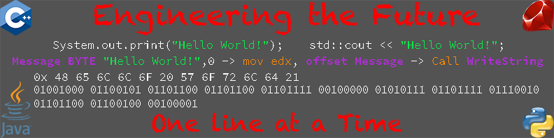
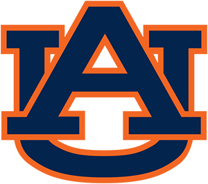

Why Choose Thomas Hansknecht?
Let's face it, developing software is difficult. Software products require passionate and hardworking individuals. Software takes many hours of grinding and problem solving. Those without passion or skill will give up easily and develop sub optimal products.
With me it is different. I love to problem solve and work with a team to solve complex and jarring issues. I love finding issues with mine and others work then improving upon them. I have been developing software for 5 years now and am passionate about learning and love assisting others. I strive for excellence both in the designs I create and the functionality of my products. Many projects I have developed with a team and become both a leader and exceptional design influence over the projects in question.
My Career Interests
I enjoy both front-end and back-end development
Creating and improving on applications is what I am best with
I have experience with many different languages and operating systems and thus am not afraid of developing proprietary or open-source software
I prefer in person occupation but am not opposed to remote service
Developing in a way that improves lives and positively influences others is what I require

My Current Education
Auburn University August 2018 - December 2021

Graduated with Bachelors of Science in Computer Science within the Samuel Ginn College of Engineering

Spring Hill College August 2017 - May 2018
Majored in Business Administration under CIS (Computer Information Systems)
Decided to switch majors and University as I felt business was important and useful but not what I was truly passionate for
Awarded the Gautrelet Scholarship for academic achievement

UMS-Wright Preparatory School

Graduated with my high school diploma in 2017
Attended from kindergarten all the way through my 12th grade year
My Personal Backstory
I first experienced constructing software in my Intro to Python class which I took my 12th grade year at high school. I found the projects we worked on engaging and fulfilling and knew that a future in software is what I desired. When I went to Spring Hill College, I had the mindset that being in software and business would be my expertise. However, I found development to be more thrilling and engaging over business related activity.
I expanded through college and found myself working on more personal software projects that I would develop over the course of months or even years. Eventually I became involved in software related clubs such as the ACM (Association of Computing Machinery) and participated in the Ethical Hacking club. Later I began to enter a software competition known as Auburn Hacks. There the "Mario With A Gun" project I discussed on my home page was developed. I have since expanded this project and added another level to the game.
Throughout high school I was involved in a lot of extracurricular activities such as soccer, chess, and scouting. I invested many years into chess and ranked 18th in the Nation under the U-800 division in the US Chess Federation competition which took place in Atlanta Georgia.